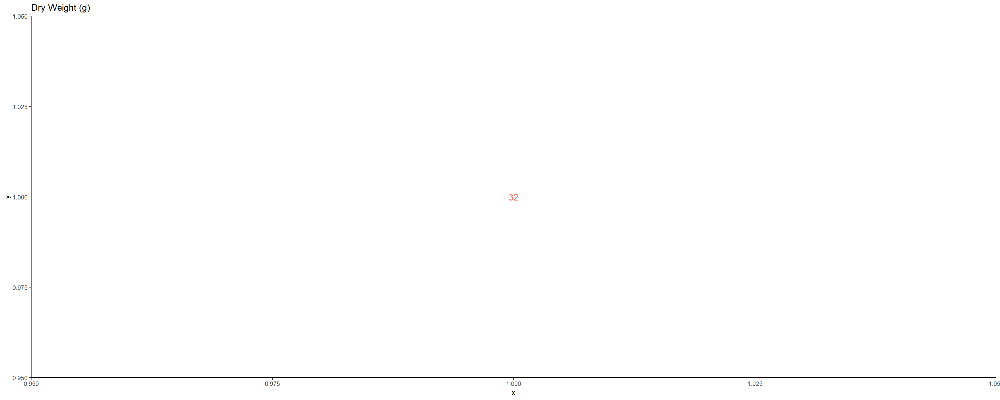
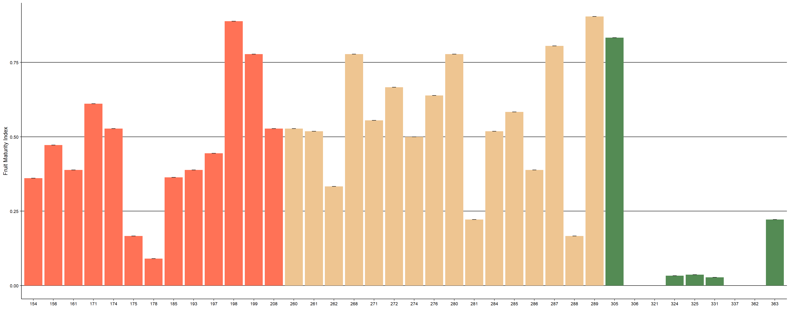
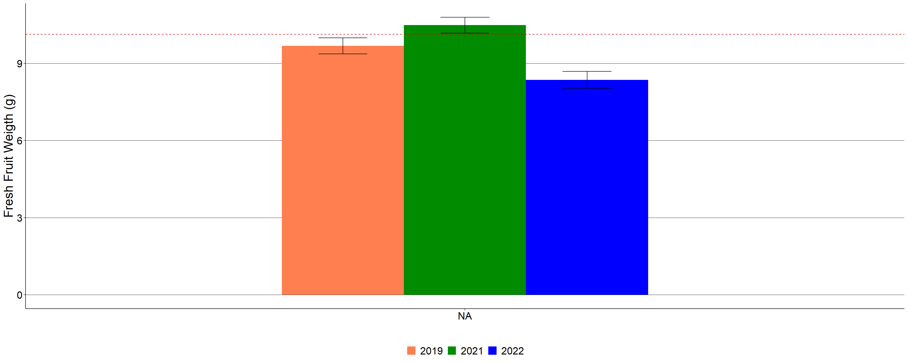
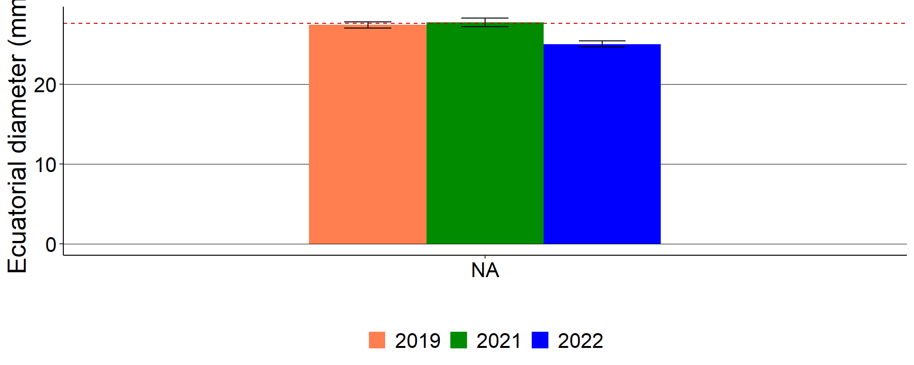

Morphological
The fruit
Average fruit
## variable means
## 1 Fresh fruit weight 9.7613238
## 2 Dry fruit weight 1.7924866
## 3 Dry seed weight 1.1614729
## 4 Dry pulp weight 0.6310138
## 5 Dry pulp/fresh fruit weight (%) 3.4074039
Maturity index
## site phenotype N indmad sd se ci
## 1 concordia 154 4 0.3611 0 0 0
## 2 concordia 156 4 0.4722 0 0 0
## 3 concordia 161 4 0.3889 0 0 0
## 4 concordia 171 4 0.6111 0 0 0
## 5 concordia 174 4 0.5278 0 0 0
## 6 concordia 175 4 0.1667 0 0 0
## 7 concordia 178 4 0.0909 0 0 0
## 8 concordia 185 4 0.3636 0 0 0
## 9 concordia 193 4 0.3889 0 0 0
## 10 concordia 197 4 0.4444 0 0 0
## 11 concordia 198 4 0.8889 0 0 0
## 12 concordia 199 4 0.7778 0 0 0
## 13 concordia 208 4 0.5278 0 0 0
## 14 palmar 260 4 0.5278 0 0 0
## 15 palmar 261 4 0.5185 0 0 0
## 16 palmar 262 4 0.3333 0 0 0
## 17 palmar 268 4 0.7778 0 0 0
## 18 palmar 271 4 0.5556 0 0 0
## 19 palmar 272 4 0.6667 0 0 0
## 20 palmar 274 4 0.5000 0 0 0
## 21 palmar 276 4 0.6389 0 0 0
## 22 palmar 280 4 0.7778 0 0 0
## 23 palmar 281 4 0.2222 0 0 0
## 24 palmar 284 4 0.5185 0 0 0
## 25 palmar 285 4 0.5833 0 0 0
## 26 palmar 286 4 0.3889 0 0 0
## 27 palmar 287 4 0.8056 0 0 0
## 28 palmar 288 4 0.1667 0 0 0
## 29 palmar 289 4 0.9048 0 0 0
## 30 gualeguaychu 305 4 0.8333 0 0 0
## 31 gualeguaychu 306 4 0.0000 0 0 0
## 32 gualeguaychu 321 4 0.0000 0 0 0
## 33 gualeguaychu 324 4 0.0333 0 0 0
## 34 gualeguaychu 325 4 0.0370 0 0 0
## 35 gualeguaychu 331 4 0.0278 0 0 0
## 36 gualeguaychu 337 4 0.0000 0 0 0
## 37 gualeguaychu 362 4 0.0000 0 0 0
## 38 gualeguaychu 363 4 0.2222 0 0 0
## Linear mixed model fit by REML. t-tests use Satterthwaite's method ['lmerModLmerTest']
## Formula: (indmad) ~ 1 + (1 | site/phenotype)
## Data: dataindmad
##
## REML criterion at convergence: -3710.1
##
## Scaled residuals:
## Min 1Q Median 3Q Max
## -1.086e-07 -6.433e-08 8.578e-09 4.575e-08 1.201e-07
##
## Random effects:
## Groups Name Variance Std.Dev.
## phenotype:site (Intercept) 1.919e-02 1.385e-01
## site (Intercept) 3.146e-06 1.774e-03
## Residual 3.769e-16 1.942e-08
## Number of obs: 152, groups: phenotype:site, 38; site, 3
##
## Fixed effects:
## Estimate Std. Error df t value Pr(>|t|)
## (Intercept) 0.423077 0.022585 0.002858 18.73 0.981
## optimizer (nloptwrap) convergence code: 0 (OK)
## Model failed to converge with max|grad| = 0.407859 (tol = 0.002, component 1)
## Model is nearly unidentifiable: very large eigenvalue
## - Rescale variables?## [1] 1.963556e-12## [1] 99.98361## [1] 0.01638558## # Intraclass Correlation Coefficient
##
## Adjusted ICC: 1.000
## Unadjusted ICC: 1.000pff Peso fresco del fruto
## year site N pff sd se ci
## 1 2019 concordia 161 10.020429 5.975964 0.4709719 0.9301232
## 2 2019 palmar 156 10.405921 6.127587 0.4905996 0.9691242
## 3 2019 gualeguaychu 94 7.889777 6.713651 0.6924602 1.3750888
## 4 2021 concordia 179 5.998939 4.949219 0.3699220 0.7299970
## 5 2021 palmar 171 12.536789 7.001749 0.5354371 1.0569618
## 6 2021 gualeguaychu 164 13.241445 6.419648 0.5012903 0.9898602
## 7 2022 concordia 121 7.943298 5.014442 0.4558584 0.9025679
## 8 2022 palmar 6 11.358500 7.145121 2.9169834 7.4983445
## 9 2022 gualeguaychu 114 8.640035 5.064179 0.4743038 0.9396814 The bars indicate standard deviation. The dashed red line indicates the mean.
de Diámetro ecuatorial
## year site N de sd se ci
## 1 2019 concordia 161 28.04247 7.381213 0.5817211 1.1488418
## 2 2019 palmar 156 28.88958 6.654205 0.5327628 1.0524127
## 3 2019 gualeguaychu 94 23.71266 7.630252 0.7870004 1.5628268
## 4 2021 concordia 179 21.40870 7.504648 0.5609237 1.1069161
## 5 2021 palmar 171 30.23503 6.537292 0.4999192 0.9868489
## 6 2021 gualeguaychu 164 31.95970 16.652705 1.3003578 2.5677185
## 7 2022 concordia 121 25.07826 6.594981 0.5995437 1.1870548
## 8 2022 palmar 6 30.01000 7.182147 2.9320994 7.5372014
## 9 2022 gualeguaychu 114 24.64061 5.917095 0.5541867 1.0979438
The bars indicate standard deviation. The dashed red line indicates the mean.